Demo version — all people, phone numbers and e-mails in this PDF are fictional
In a nutshell
RedLeb Hub is the website and phone-friendly app for Liverpool supporters in Lebanon. You can add it to your home screen like an app — no app store needed.
What it's for:
Bringing supporters together in one digital home
Making it easy to discover events and news
Letting members use a digital card, predictions, and community tools
Letting the committee run content, members, and events without calling a developer every week
Important: RedLeb Hub does not replace official OLSC membership. The official member number still comes from the committee. The platform supports members the committee has already approved.
Three spaces
VisitorsDiscover the club, read news, browse events, apply for membership.
MembersDigital card with QR, Match Hub predictions, leaderboard, community feed.
Fig 4a. Home (top) What visitors see: Welcome message, latest news, and paths to events and membership. Why it helps: First impression — feels official, warm, and easy to scroll.
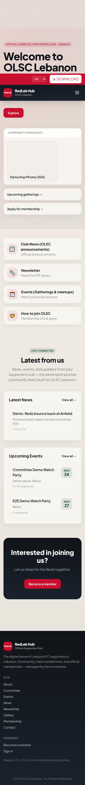
Fig 4b. Home (scrolled) What visitors see: More sections as supporters explore. Why it helps: Shows depth without overwhelming newcomers.
Fig 4c. About What visitors see: Club story and values. Why it helps: Builds trust for people who do not know OLSC Lebanon yet.
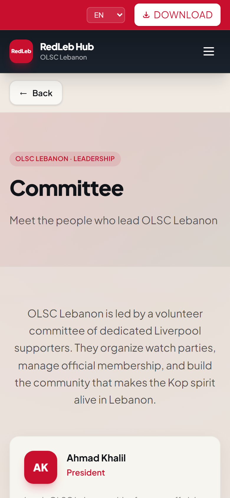
Fig 4d. Committee What visitors see: Who runs the branch. Why it helps: Puts faces and roles on the people behind the club.
For visitors — news & media
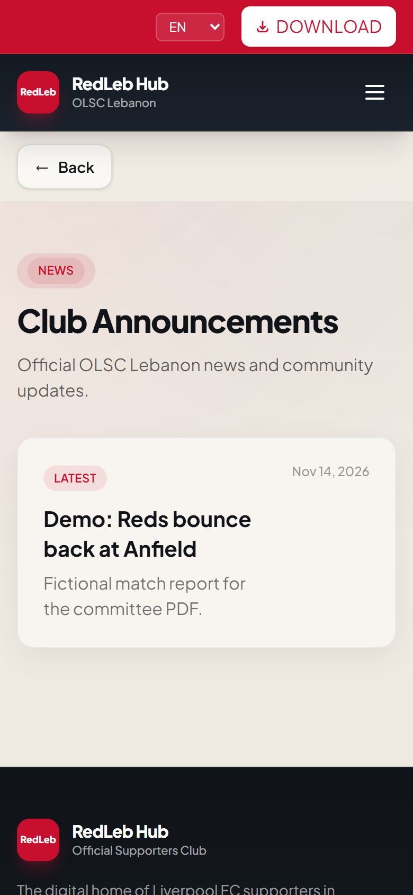
Fig 5a. News What visitors see: Latest articles. Why it helps: Keeps the site alive between matchdays.
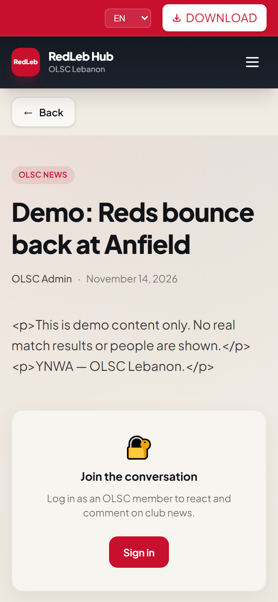
Fig 5b. News article What visitors see: Full story view. Why it helps: Room for match reports and announcements.
Fig 5c. Newsletter archive What visitors see: Monthly PDF issues when published. Why it helps: Long-form updates for members who prefer e-mail.
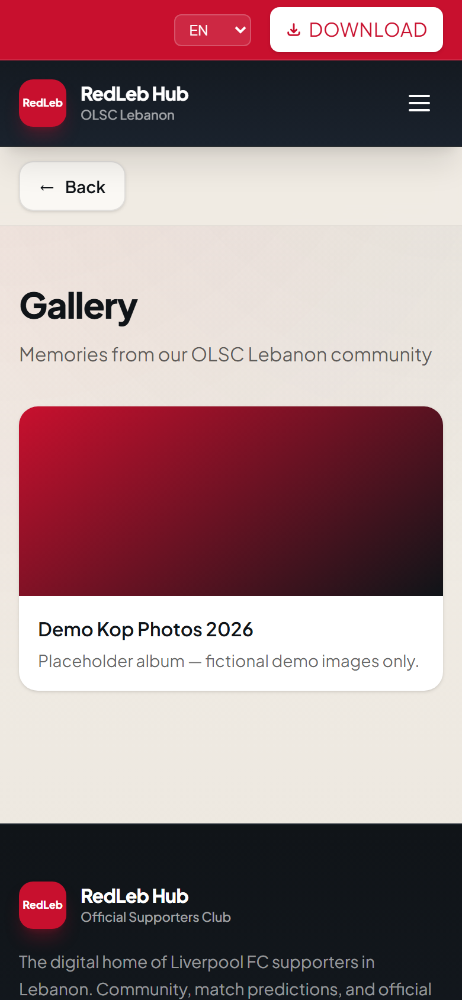
Fig 5d. Gallery What visitors see: Photo albums from events. Why it helps: Celebrates the community — demo photos only in this pack.
For visitors — events & guests
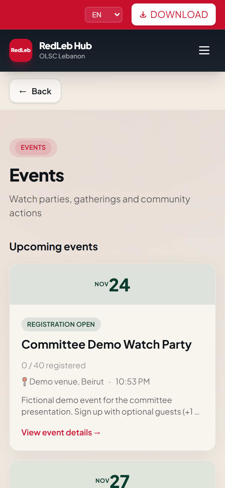
Fig 6a. Events list What visitors see: Upcoming watch parties and gatherings. Why it helps: One place to see what is on.
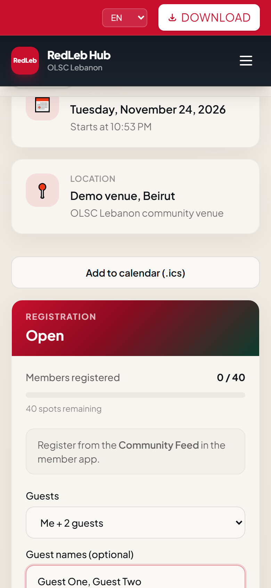
Fig 6b. Event sign-up (+ guests) What visitors see: Members can register and bring +1 or +2 guests when enabled. Why it helps: Helps the committee plan capacity — guest limits are configurable.
Fig 6c. Membership info What visitors see: Explains official membership vs the digital platform. Why it helps: Sets expectations before someone applies.
Becoming a member
Read the Membership page and choose the application form.
Fill in the form (demo data only in screenshots).
The committee reviews applications in the admin area.
Approved members receive an invitation link, set a password, and log in.
Fig 7a. Application form What visitors see: Collects contact details and ALLRED SUPPORT ID when relevant. Why it helps: Structured data instead of scattered WhatsApp messages.
Fig 7b. Sign in What visitors see: Returning members and committee admins log in here. Why it helps: Same front door for everyone — permissions decide what you see next.
Activation after invite uses a secure invitation link (not shown here). The committee always decides who becomes a member.
Becoming a member — committee view
Membership applications Queue, status, and quick actions for fictional demo applicants.
You stay in control: approve, reject, or ask for payment confirmation before anyone gets platform access.
Member area — home & card
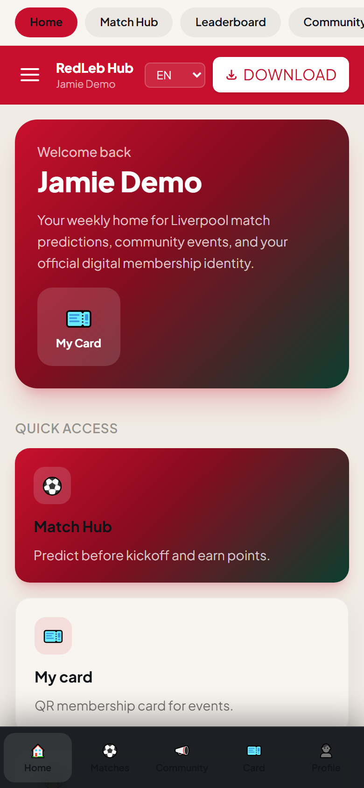
Fig 9a. Member home What visitors see: Shortcuts to card, matches, and community. Why it helps: Feels like a supporters app, not a blank login screen.
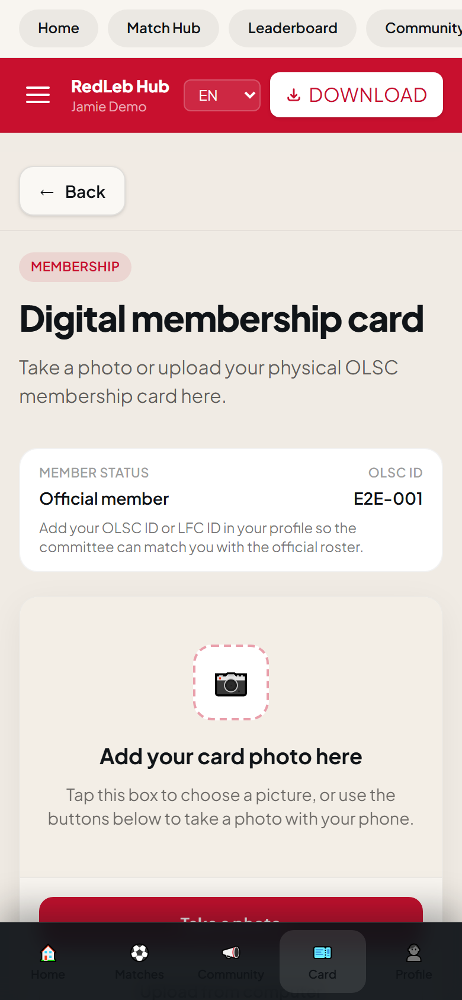
Fig 9b. Digital membership card + QR What visitors see: Check-in at events; optional uploaded card photo. Why it helps: Replaces digging for a paper card — committee can verify at the door.
If the OLSC logo file is not uploaded yet, the site shows a temporary logo until you add one under Settings → Branding.
Member area — Match Hub
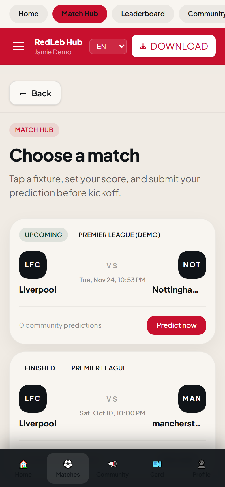
Fig 10a. Upcoming matches What visitors see: Liverpool fixtures open for predictions. Why it helps: Engagement without a separate app.
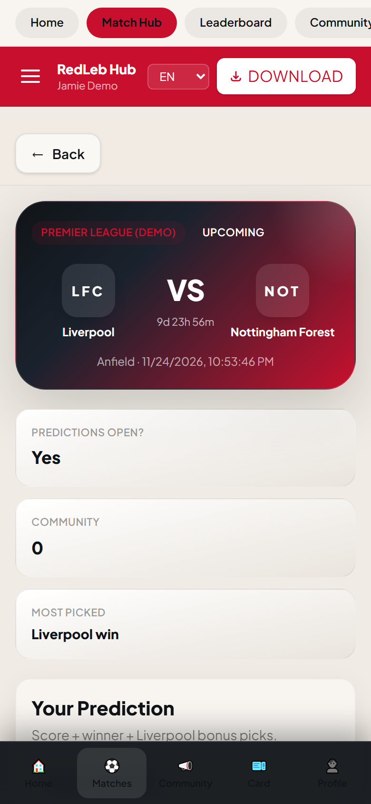
Fig 10b. Match Hub / predictions What visitors see: Score and scorer picks before kick-off. Why it helps: Season points only — no coins or XP shop in the member experience.
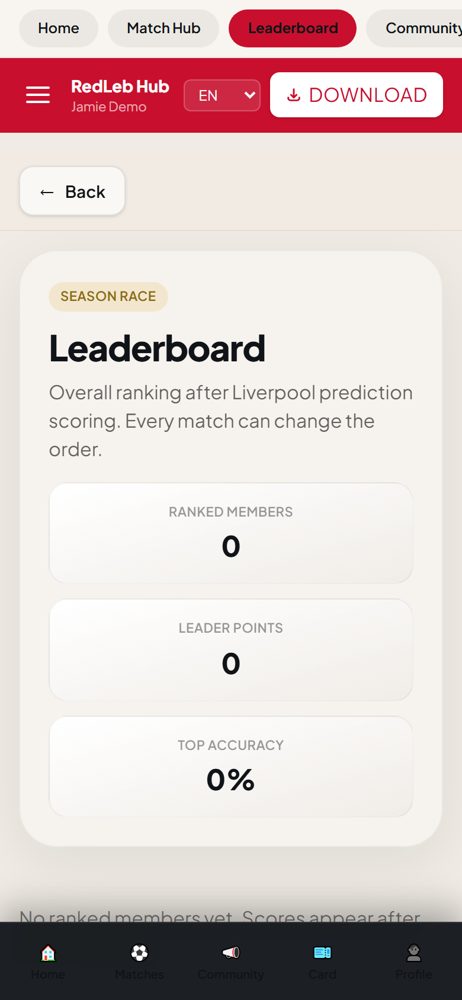
Fig 10c. Leaderboard What visitors see: Rankings by prediction points. Why it helps: Friendly competition — privacy options exist for members who opt out of the directory.
Member area — community & profile
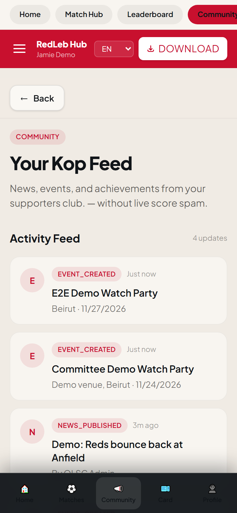
Fig 11a. Community feed What visitors see: News, events, and milestones in one feed. Why it helps: Keeps members coming back between matches.
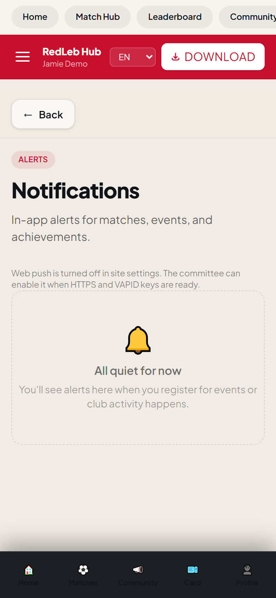
Fig 11b. Notifications What visitors see: In-app alerts when enabled. Why it helps: Pairs with optional push notifications when you configure VAPID keys.
Fig 11c. Profile What visitors see: Name, contact details, OLSC ID, ALLRED SUPPORT ID. Why it helps: Members maintain their own details; committee sees roster tools in admin.
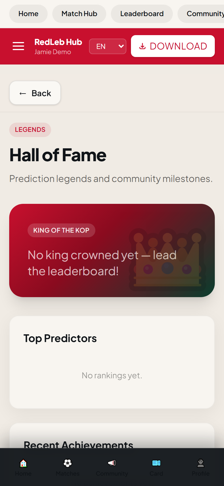
Fig 11d. Hall of Fame What visitors see: Top predictors and achievements when data exists. Why it helps: Celebrates regular contributors — may look quiet until more matches are played.
Committee — dashboard & applications
Admin dashboard Quick links and overview for day-to-day work.
Role-based access is built in: only people with the right permissions see sensitive admin screens (for example user management or audit log).
Committee — members & events
Members list Search, ALLRED SUPPORT ID column, invitations, and roster import.
Members & activity Search, ALLRED SUPPORT ID, last seen — open Edit on a member for login and prediction activity (same screen family as the list).
Events admin Registrations, guest counts, and exports for planning.
Committee — content tools
Matches Create fixtures, close predictions, enter results.
News Draft and publish articles.
Newsletter Monthly issues and optional member e-mail sends.
CMS pages Structured sections for About, Membership, and other pages.
The committee can change almost anything
No developer needed for everyday wording and branding:
Edit mode on the live page (for admins with content permission — same toolbar as public pages when logged in)
Texts & Labels — search, edit, panic-restore to defaults
Settings / Branding — site name, colours, logo upload, navigation order
Design page — quick reference to where visual settings live
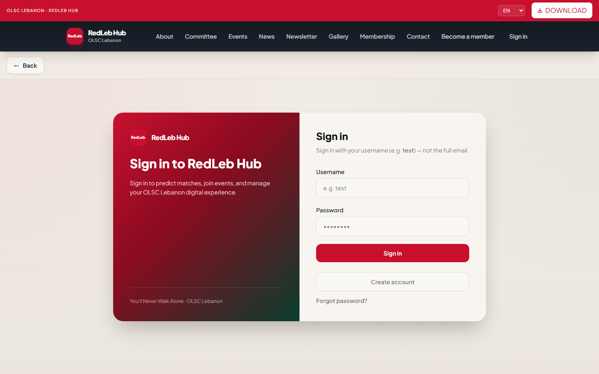
CMS pages (admin) Pick a page, edit sections, save — no code.
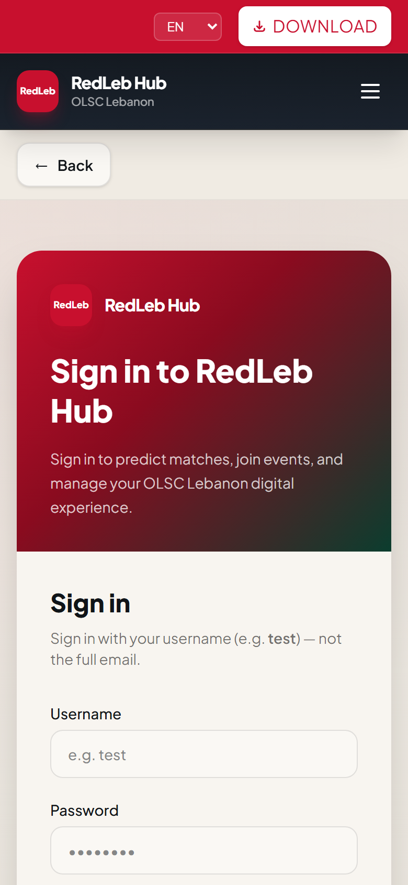
Fig 15a. Texts on mobile What visitors see: Search and edit button labels from a phone. Why it helps: Day-to-day copy changes without a laptop.
Texts, branding & undo
Texts & Labels Hundreds of keys in English; Arabic presets can be imported for review.